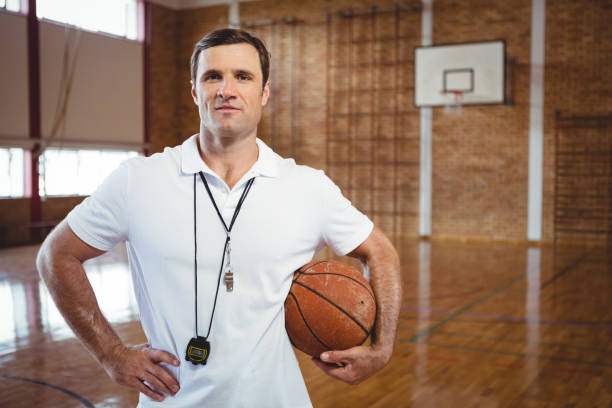
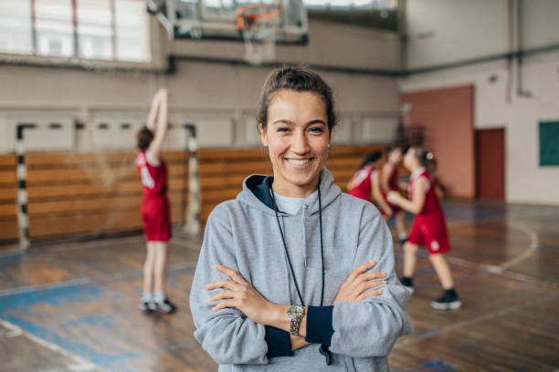

Our Trainers

- Name: Jeff Connors
- Education: Boston College
- Experience: 8 Yrs
- Position: Senior Camp Trainer
Jeff is our longest tenured trainer at 8 years, and has been with the company since he graduated from Boston College with a degree in Physical Education. Jeff finished off his senior year at Boston College with a 3.8 GPA, and played all four years on the university's Mens Basketball team. In his senior year, Jeff was a part of a team which made it to its first NCAA Tournament in over 20 years. Jeff went on to finish the year fourth in scoring on his team, and led the team in total assists. Jeff now has shifted his focus to teaching kids about the game of basketball, in hopes that his collegiate experience can help nurture the talent of his kids.

- Name: Lily Clifford
- Education: Baylor
- Experience: 4 Yrs
- Position: Junior Camp Trainer
Lily started off her career at NextGen as an office assistant for the first two years of her tenure, and quickly discovered that she had a passion for working directly with kids. After Lily expressed this to our team, we immediatly started her off as an assistant to Jeff in the senior camp, where she got hands on training for the whole summer learning how build a strong program. As a result, Lily was promoted to Junior Camp Head Trainer at the end of the summer, and she will be enetering her first year as the lone trainer of the Junior Camp. Like Jeff, Lily also played collegiate basketball at Baylor for four years. Upon completion of her four years at Baylor, Lily decided that she wanted to use her finance degree and basketball experience, so she joined our team after she graduated. Lily has a great basketball mind, and is excited to get her first year started as a full-time trainer.
Our Office Staff
- Name: Pam Sweeny
- Education: Yale
- Experience: 5 years
- Position: Finance
- Contact: (321)-456-8970
When we interviewed Pam for the first time 5 years ago, we knew we had struck gold. Pam is an excellent worker with a glowing personality. Trying to finance something can be a stressful and anxiety inducing process, but with Pam's personality and knowledge the process is made much easier. Using her fiance degree from Yale University, Pam knows everything there is to know about financing options, and she will sit with each applicant and figure out the best financing method for that client,until they are completely satisfied.
- Name: Ben Crowe
- Education: Harvard
- Experience: 6 years
- Position: Coordinator
- Contact: (654)-908-3232
For the last 5 summers, Ben has been the coordinator of our camps and has put together trips for the program. Ben is nothing short of an expert when it comes to event/program planning. In his 4 years at Harvard, Ben finished with a 4.0 GPA and got his degree in Event Planning. While Ben was at Harvard, he also participated in the coordination of multiple festivals in the city of Boston, and he even got some experience with basketball when he was the director of the rec league basketball tournament on campus. Ben brings to the table an unmatched work ethic when it comes to trying to put together the best experience for the kids. Last year, Ben was recognized by the local high school for his work with our program and for providing kids with the opportunity to learn and grow their skills in an elite program.